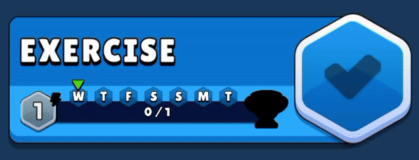
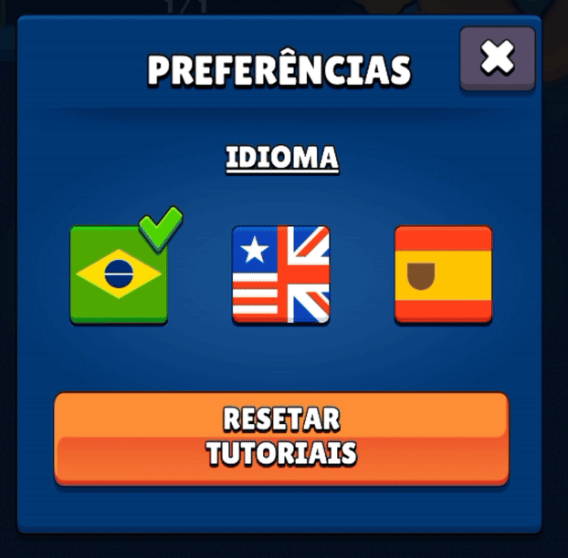
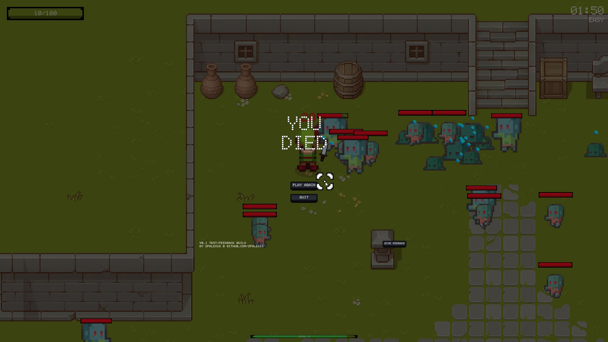

Trofy
Category:
Productivity Mobile App
Tech Stack:
C#, Unity, iOS and Android
Inspiration:
Duolingo
Index:
Objective
Trofy is a mobile app with the objective to help you achieve your goals by gamifying personal objectives to reinforce the creation of good habits. The name refers to the act of receiving a trophy given to yourself by yourself.

After years of struggling with procrastination in my youth, it slowly became clear that the best way to motivate myself and maintain new habits was to document and review my progress over time. Seeing historical trends of even slightly improvements motivated me to keep going. My goal with Trofy was to transform that metodology into a game that would inspire others to approach consistant personal improvement in the same way.
The app’s idea was inspired by Duolingo’s gamified education methodology, where users have clear progression goals, get points to spend on extra lives, and can easily opt-in to compete with other users in in-app ladders with multiple levels of difficulty ranks.
Core Concepts
{kind=link}
The app’s structure is divided in a few core pillars:
Gamified experience
While Trofy is a “to-do like” app in it’s core, it’s main aspect is to resemble a game. Users should feel like playing a game by receiving in-app rewards and clear visual feedback.
{kind=link}
The gamification system was designed to motivate users with two positive feedback loops on Challenge completion. One by receiving a Trophy on challenge completion, and the other with a Challenge level-up system.
{kind=link}
A challenge in Trofy is defined by an activity that must be completed at least once a week. This means that a user can earn a Trophy every week, and a level on that challenge every month.

Trofy’s MVP focused on building the core gamified experience, including the user interface and visual feedback. Community features like competitions, objective sharing, and account systems were kept out of scope as they would require significant backend development beyond the project’s allocated timeframe. However, these features would be essential to make the app truly gamified and ready for a full v1.0 release.
Personal improvement goal setting
The main drive for using the app is to be able to quickly create, update, and review important personal objectives.
A challenge in Trofy is defined by a task that must be completed at least once a week. When creating a challenge, a user has the ability to customize two main properties:

- Frequency (Difficulty):
Defines the number of days in a week that the task needs to be completed. A challenge can be a single weekly task, or something that needs to be completed everyday.
- Weekly Start Date (Start):
Defines when the challenge starts and the day of the week that it restarts. If you define an objective to start on a Wednesday, it means the weekly challenge always starts on Wednesdays and ends on Tuesdays at the end of the day.
Progress tracking & performance review
Each objective clearly displays their progress so the user can have a general idea of how they are doing in a quick glance. Since each objective can have a different amount of days required to be completed in a week, each objective will have their own percentage progression for that week and history since it was created.

The user can also leave a short written note and rate from 1 to 5 stars each day of the week. This very simple feature can give the user some additional context when reviewing their progress at a later date.

The progress tab is where it all comes together to quickly show how much the user has improved since they started using the app. Being able to review overall progression in a quick glance should be the main motivating factor to bring users back to the app and to continue focusing on their personal priorities.

User Map
{kind=link}
Trofy’s goal of encouraging good habits guided the structure of the user journey. The experience was designed as a positive feedback loop—motivating users to go beyond their goals and return regularly to continue improving.
At its core, the app functions like a to-do list, similar to the ones you may have used or created yourself. The biggest difference is the opportunity to fully track past progress, check trends, and provide opportunities for the user to reflect and reprioritize their objectives.
Tech Stack
Developing a few demo games previously in Unity provided a solid foundation for a gamified app. Unity provided a solid way to develop logic behind constantly animated objects and a seamless solution to port the application to iOS and Android mobile devices.
Csharp is the programming language used in Unity. After learning the foundations of the language, it was refreshing to implement more challenging logic with the notifications controller, save and load systems, and day list managers.
This was also my first time working with AI tools to improve on the code I was writing and to help with more complex logic that was beyond my realm of knowledge. I wrote more details on my use of these tools on the learnings section and on our about page.
Information Architecture
{kind=link}
The core component of Trofy’s logic system is focused on the Day List objects, it is used and referenced by all main components of the app.
Every objective generates a list of days in a week’s period. This list is then updated by the User Controller through user input, and then accessed by the Date Controller to display today’s applicable objectives and any history of completion on the progress tab.
This is the code that controls the initial generation of a week’s day list from the Objective Controller. Once the initial generated week is completed, the code automatically triggers the generation of additional weeks for the next objective periods.
//Objective Controller Code Snippet
public void GenerateDayList() {
dayList = new List();
int startDayOfWeek = (int)startDate.DayOfWeek;
for (int i = startDayOfWeek; i < startDayOfWeek + 7; i++)
{
DateTime currentDay = startDate.AddDays(i - startDayOfWeek);
DayInfo dayInfo = new DayInfo(currentDay, (i) % 7, 1, difficulty);
dayList.Add(dayInfo);
}
DateTime currentDate = DateTime.Now;
CheckDayList(currentDate);
}
Another notable area from Trofy’s design is the logic behind the notifications sent by the app. Push notifications are one of the biggest benefits of working with mobile devices. In order to have an engaging and effective experience, it would be crucial to implement a system that provided periodic reminders to the user and motivational messages to bring them back after periods of inactivity.
{kind=link}
Trofy’s notifications system was structured with three types of notification schedules:
- Priority notifications
Reminders on how many days left in a objective that still isn‚Äôt complete this week ‚Äî ‚ÄúThis is your last chance to get a üèÜ this week!‚Äù.
- Restart notifications
Reminders on new week starts ‚Äî ‚ÄúExercise starts again today, start strong ü홂Äù.
- Callback notifications
Motivational reminders to bring back the user to the app after many days of inactivity ‚Äî ‚ÄúYour struggles make you stronger. Your obstacles pave the way for success üíØ‚Äù.
Another feature worth a highligh was the localization system built for the language switcher. With a simple tap, users can change the app’s language instantly.
{kind=link}
The localization system works by replacing text strings based on spreadsheet-style tables that map each interface element to its translation.
Visual Design System
{kind=link}
The goal with the visuals of Trofy was to make the whole experience feel like the user is playing a game. A “To-do” list is something you go back to checkmark what has been done, in Trofy you return to earn rewards on a game for completing those tasks. All elements used were purposefully choosen to resemble mobile games like Clash of Clans and designs from gamified apps like Duolingo.
Trofy’s main character was custom designed and created with Photoshop, while the rest of the UI elements were paid assets acquired from Unity’s Asset Store.

Demo & Download
Download Born Survivor on GitHub and give it a try!
Learnings
{kind=link}
This project had a much narrower focus than our first venture into game dev with Flappy Astronaut. While our first foray was aimed at understanding the complexities of the whole process, this time we wanted to zoom in on the specific complexities involved in developing interesting game mechanics.
Here are the most significant learnings and insights from this project:
- Interesting game mechanics take time polish.
Creating a simple game mechanic can be quick and easy to implement, however, getting it to a point that is engaging and truly rewarding takes time and polish. With Born Survival we included several game mechanics to highlight the main focus with the powerups, but getting other fundamental pillars like combat, enemy behaviour, and variety would have taken a much longer time to refine and reach an acceptable quality level for an end product.
- “Pick 1 of 3” is a great way to add replayability.
Our main objective proved the hypothesis that even a very simple implementation of a “Pick 1 of 3” mechanic can have notable impacts on user experience. The promise of variety creates a sense of possibilities and drives experimentation and increased engagement by the end user. In Born Survivor this potential was kept purposefuly limited, but with the proper investment on a complete experience this mechanic could have impressive positive results.
- Unity’s limitations.
Unity runs an Update function on every frame for each game object that has a script attached to it. This means that the number of elements on screen can have a significant impact on performance if not handled correctly. Instead of instantiating and destroying scripted game objects (like enemies), the best practice would have been to Pool these objects and reuse them as needed instead of fully destroying them after use.
- AI
AI

Thank you for checking out this project!
Check out some of our other projects:
Trofy
A “To-Do like” app to gamify personal goals and reinforce the creation of good habits.

Flappy Astronaut
A demo Unity game inspired by Flappy Birds simple, yet satisfying mechanics.